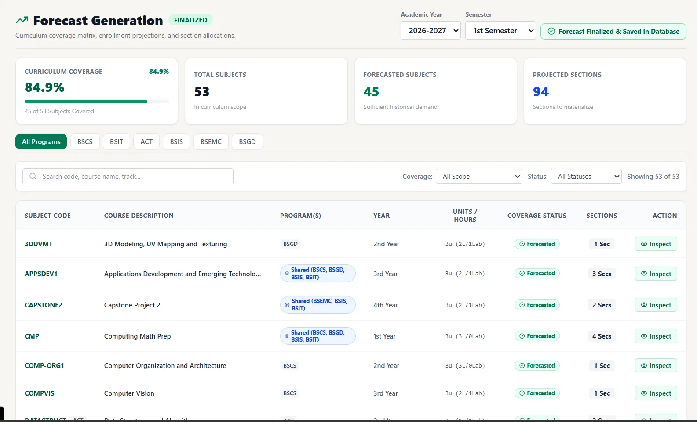
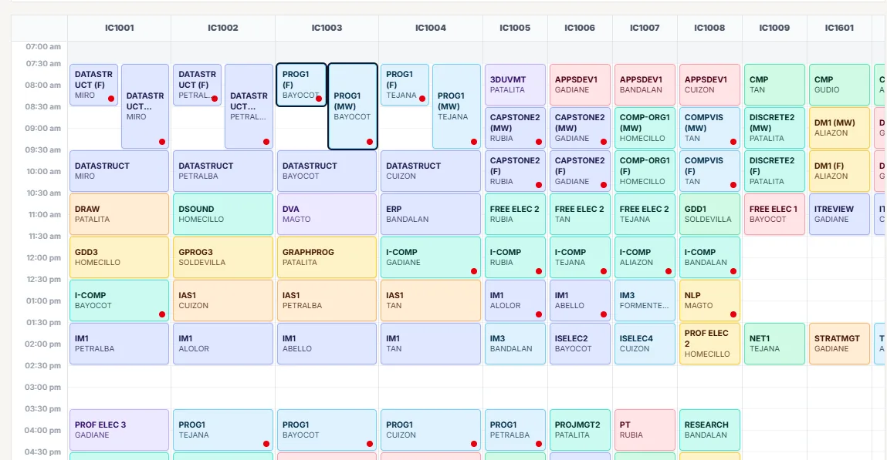
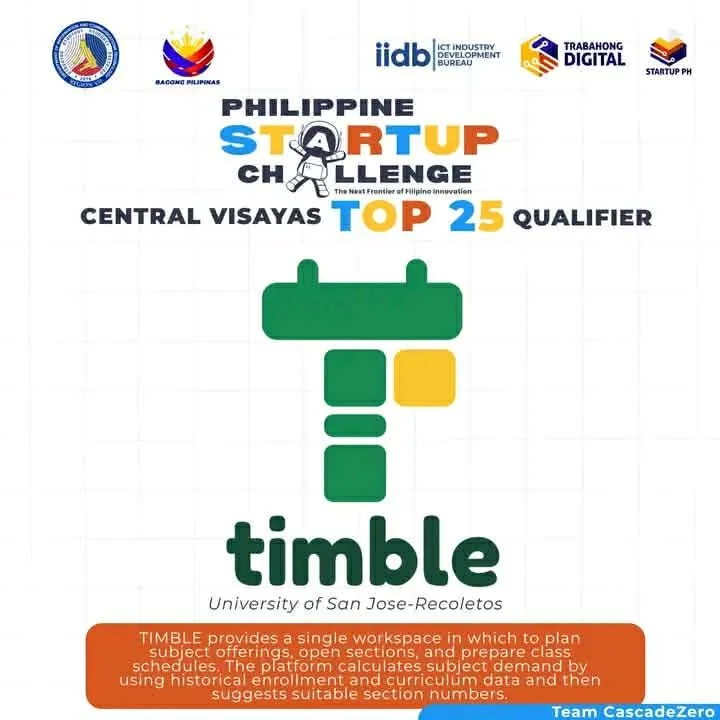

FEATURED PROJECT / 01
TIMBLE.
A timetable planning workspace for subject offerings, open sections, and class schedules. It uses historical enrollment and curriculum data to suggest suitable section numbers.
THE IDEA → Make academic planning easier to see, adjust, and act on.
HIGHLIGHT → Central Visayas Top 25 qualifier, Philippine Startup Challenge XI.
HIGHLIGHT → Central Visayas Top 25 qualifier, Philippine Startup Challenge XI.



Actual TIMBLE screens / forecast + schedule